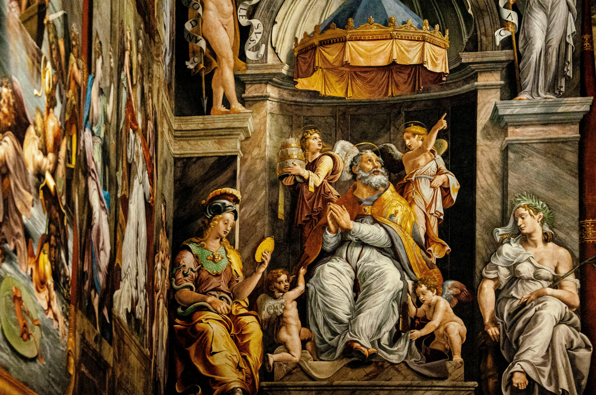
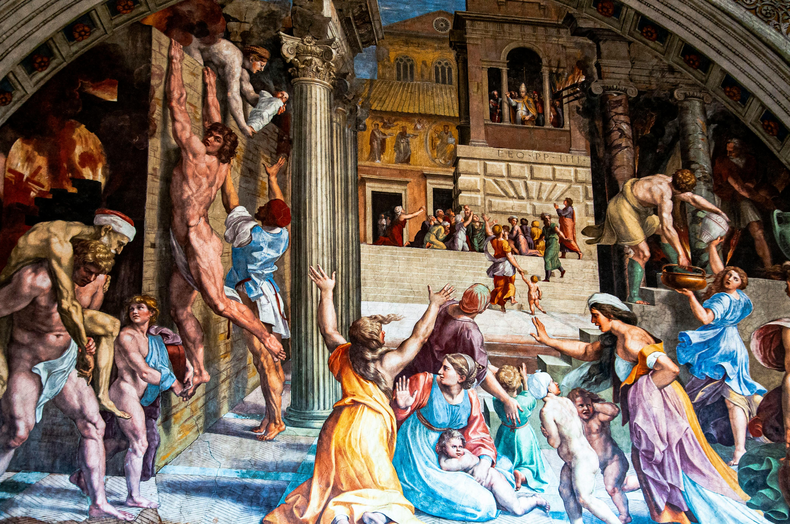

油画起源于欧洲，约在十五世纪时由荷兰人发明，以亚麻仁油、核桃油等快干性植物油调和颜料，在亚麻布、木板或纸板上进行创作。油画颜料干后不易变色，可反复覆盖与修改，色彩丰富、立体感强，适合表现光影与质感，因此成为西方绘画中最主要的画种之一。文艺复兴以来，达·芬奇、伦勃朗、梵高等大师均以油画闻名于世。
I Was Sure That the Moment I Left the Room, the Ceiling Would Collapse. I Was Sure That as Soon as I Got on the Highway, a Bridge Would Fall. I Was Sure That When I Fell Asleep, the House Would Burn Down. I Was Sure That If I Loved You, You Would Disappear. I Was Sure That If I Told the Truth, No One Would Listen. I Was Sure That If I Reached Out My Hand, Nothing Would Be There.

